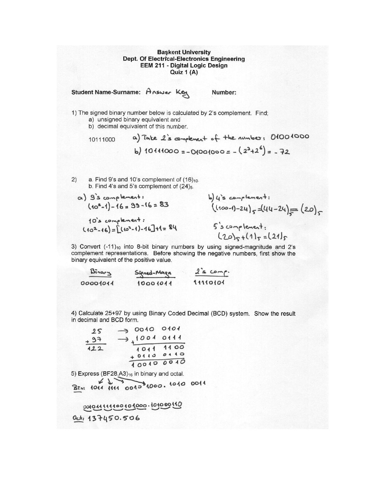
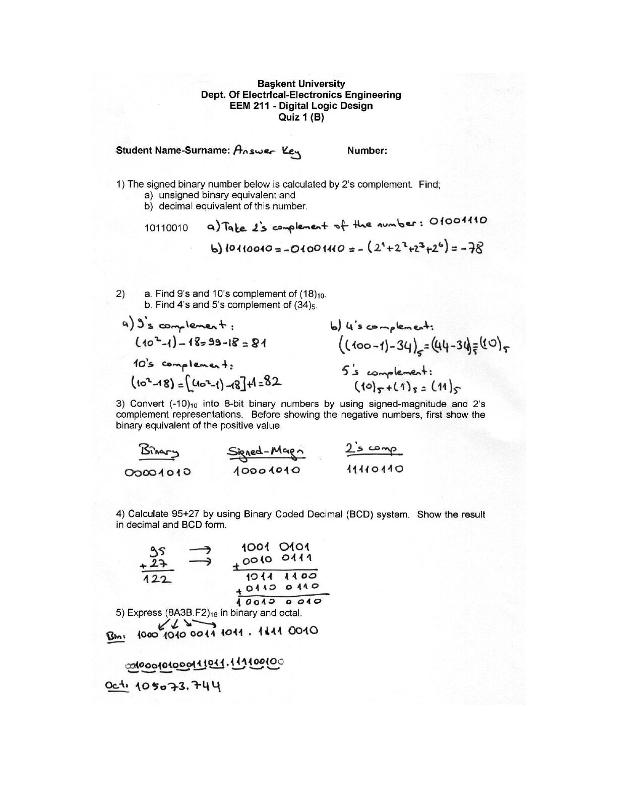

· EEM211
EEM211 Digital Logic Design: Quiz 1 Answer Key (2006)
EEM211 – Sayısal Mantık Tasarımı · 11.10.2006 · 16.10.2026
This post is the answer key for Quiz 1 of the Başkent University EEM 211 Digital Logic Design course, held in October 2006. There is a separate sheet for Group A and Group B; the questions are the same, but the numbers differ. The questions are printed and the solutions are handwritten. The document's file properties list Evren Ferhat Emekdaş as the author. Topic: number systems, complements, and BCD. The original Word file can be downloaded at the end of the post.
Quiz 1 (A)

Question 1
The signed binary number below is calculated by 2's complement. Find; a) unsigned binary equivalent and b) decimal equivalent of this number. 10111000
- a) Take the 2's complement of the number: 01001000
- b) 10111000 = −01001000 = −(2³ + 2⁶) = −72
Question 2
a. Find 9's and 10's complement of (16)₁₀. b. Find 4's and 5's complement of (24)₅.
- a) 9's complement: (10² − 1) − 16 = 99 − 16 = 83
- a) 10's complement: 10² − 16 = [(10² − 1) − 16] + 1 = 84
- b) 4's complement: ((100 − 1) − 24)₅ = (44 − 24)₅ = (20)₅
- b) 5's complement: (20)₅ + (1)₅ = (21)₅
Question 3
Convert (−11)₁₀ into 8-bit binary numbers by using signed-magnitude and 2's complement representations. Before showing the negative numbers, first show the binary equivalent of the positive value.
| Binary (+11) | Signed-magnitude (−11) | 2's complement (−11) |
|---|---|---|
| 00001011 | 10001011 | 11110101 |
Question 4
Calculate 25+97 by using Binary Coded Decimal (BCD) system. Show the result in decimal and BCD form.
25 → 0010 0101
+ 97 → + 1001 0111
---- ----------
122 1011 1100
+ 0110 0110
-----------
1 0010 0010Question 5
Express (BF28.A3)₁₆ in binary and octal.
- Binary: 1011 1111 0010 1000 . 1010 0011
- Grouping in threes: 001 011 111 100 101 000 . 101 000 110
- Octal: (137450.506)₈
Quiz 1 (B)

Question 1
Number: 10110010
- a) 2's complement: 01001110
- b) 10110010 = −01001110 = −(2¹ + 2² + 2³ + 2⁶) = −78
Question 2
a. Find 9's and 10's complement of (18)₁₀. b. Find 4's and 5's complement of (34)₅.
- a) 9's complement: (10² − 1) − 18 = 99 − 18 = 81
- a) 10's complement: 10² − 18 = [(10² − 1) − 18] + 1 = 82
- b) 4's complement: ((100 − 1) − 34)₅ = (44 − 34)₅ = (10)₅
- b) 5's complement: (10)₅ + (1)₅ = (11)₅
Question 3
For (−10)₁₀:
| Binary (+10) | Signed-magnitude (−10) | 2's complement (−10) |
|---|---|---|
| 00001010 | 10001010 | 11110110 |
Question 4
Performing 95 + 27 in BCD:
95 → 1001 0101
+ 27 → + 0010 0111
---- ----------
122 1011 1100
+ 0110 0110
-----------
1 0010 0010Question 5
Express (8A3B.F2)₁₆ in binary and octal.
- Binary: 1000 1010 0011 1011 . 1111 0010
- Grouping in threes: 001 000 101 000 111 011 . 111 100 100
- Octal: (105073.744)₈